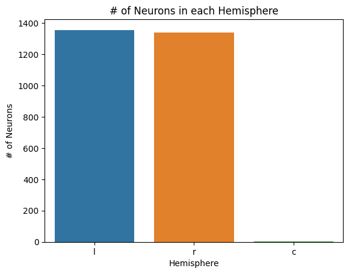
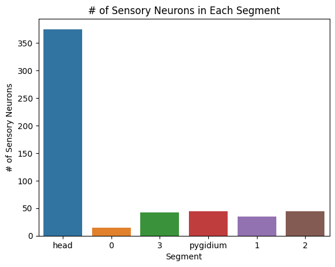
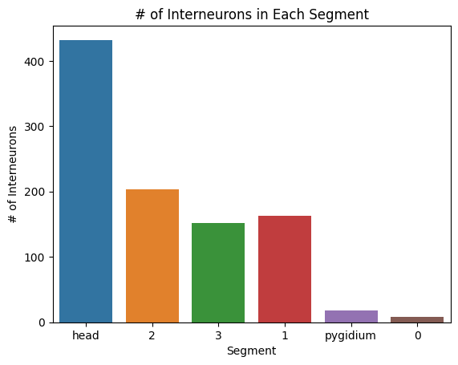
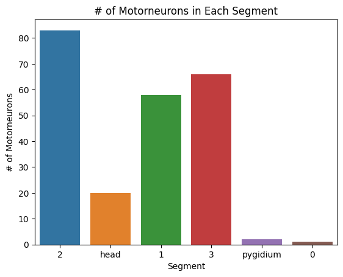

Data Summary Notebook
Data Summary Notebook#
In this notebook we seek to extract data from the Platynereis Larva Dumerilii Connectome and categorize the data in a way that will allow us to easily plot meaningful statistics of the dataset
import numpy as np
import matplotlib.pyplot as plt
import pandas as pd
import seaborn as sns
import logging
import collections
from itertools import chain, combinations
from pkg.platy import _get_folder, load_connectome_normal_lcc_annotations
We retrieve the table of annotations, where the indices are the skids and the columns are the types of annotations associated with these skids
folder = _get_folder()
annotations = load_connectome_normal_lcc_annotations()
annotations = annotations.fillna("N/A")
annotations
| skids | side | class | segment | type | group | |
|---|---|---|---|---|---|---|
| 0 | 2015233 | l | s | head | 100.0 | N/A |
| 1 | 1548290 | l | N/A | 1 | N/A | N/A |
| 2 | 1318919 | l | s | head | 88.0 | 15.0 |
| 3 | 2015241 | l | s | head | 100.0 | N/A |
| 4 | 1646603 | r | N/A | 3 | N/A | N/A |
| ... | ... | ... | ... | ... | ... | ... |
| 2696 | 1302513 | l | s | head | N/A | N/A |
| 2697 | 1630186 | l | N/A | 2 | N/A | N/A |
| 2698 | 1441779 | r | N/A | head | N/A | N/A |
| 2699 | 1671147 | r | m | 1 | 165.0 | N/A |
| 2700 | 1048573 | l | i | 3 | N/A | N/A |
2701 rows × 6 columns
With this table of annotations, we can make barplots to plot the number of neurons for certain categories
#print number of neurons in each hemisphere
hemis = {}
hemi_list = list(annotations["side"])
for i in range(len(hemi_list)):
if hemi_list[i] == "N/A":
continue
if hemi_list[i] not in hemis:
hemis[hemi_list[i]] = 1
else:
hemis[hemi_list[i]] += 1
sns.barplot(x=list(hemis.keys()), y=list(hemis.values()))
plt.title("# of Neurons in each Hemisphere")
plt.xlabel("Hemisphere")
plt.ylabel("# of Neurons")
plt.savefig(folder / "neuron_count_hems")

#print number of neurons for different types
classes = {}
class_list = list(annotations["class"])
for i in range(len(class_list)):
if class_list[i] == "N/A":
continue
if class_list[i] not in classes:
classes[class_list[i]] = 1
else:
classes[class_list[i]] += 1
sns.barplot(x=list(classes.keys()), y=list(classes.values()))
plt.title("# of Neurons for Different Classes")
plt.xlabel("Type")
plt.ylabel("# of Neurons")
plt.savefig(folder / "neuron_count_classes")
#print number of neurons in different segments
segments = {}
segment_list = list(annotations["segment"])
for i in range(len(segment_list)):
if segment_list[i] == "N/A":
continue
if segment_list[i] not in segments:
segments[segment_list[i]] = 1
else:
segments[segment_list[i]] += 1
sns.barplot(x=list(segments.keys()), y=list(segments.values()))
plt.title("# of Neurons in Each Segment")
plt.xlabel("Segment")
plt.ylabel("# of Neurons")
plt.savefig(folder / "neuron_count_segments")
#print number of sensory neurons in each segment
indices = []
segment_sensory = {}
for i in range(len(class_list)):
if(class_list[i] == "s"):
indices.append(i)
for i in indices:
if segment_list[i] == "N/A":
continue
if segment_list[i] not in segment_sensory:
segment_sensory[segment_list[i]] = 1
else:
segment_sensory[segment_list[i]] += 1
sns.barplot(x=list(segment_sensory.keys()), y=list(segment_sensory.values()))
plt.title("# of Sensory Neurons in Each Segment")
plt.xlabel("Segment")
plt.ylabel("# of Sensory Neurons")
plt.savefig(folder / "neuron_count_sensory_in_segments")

#print number of interneurons in each segment
indices = []
segment_inter = {}
for i in range(len(class_list)):
if(class_list[i] == "i"):
indices.append(i)
for i in indices:
if segment_list[i] == "N/A":
continue
if segment_list[i] not in segment_inter:
segment_inter[segment_list[i]] = 1
else:
segment_inter[segment_list[i]] += 1
sns.barplot(x=list(segment_inter.keys()), y=list(segment_inter.values()))
plt.title("# of Interneurons in Each Segment")
plt.xlabel("Segment")
plt.ylabel("# of Interneurons")
plt.savefig(folder / "neuron_count_inter_in_segments")

#print number of motorneurons in each segment
indices = []
segment_motor = {}
for i in range(len(class_list)):
if(class_list[i] == "m"):
indices.append(i)
for i in indices:
if segment_list[i] == "N/A":
continue
if segment_list[i] not in segment_motor:
segment_motor[segment_list[i]] = 1
else:
segment_motor[segment_list[i]] += 1
sns.barplot(x=list(segment_motor.keys()), y=list(segment_motor.values()))
plt.title("# of Motorneurons in Each Segment")
plt.xlabel("Segment")
plt.ylabel("# of Motorneurons")
plt.savefig(folder / "neuron_count_motor_in_segments")

#number of neurons in each celltype (specified by paper)
annotations.fillna("N/A")
celltype_count = {}
celltype_list = list(annotations["type"])
for i in range(len(celltype_list)):
if celltype_list[i] == "N/A":
continue
if celltype_list[i] not in celltype_count:
celltype_count[celltype_list[i]] = 1
else:
celltype_count[celltype_list[i]] += 1
celltype_count = {int(k):v for k,v in celltype_count.items()}
celltype_count = dict(sorted(celltype_count.items()))
df = pd.DataFrame.from_dict(celltype_count, orient="index", columns=["count"])
df = df.rename_axis('celltype', axis=1)
df.to_csv(folder / "neuron_count_neuronal_types.csv")
df
| celltype | count |
|---|---|
| 1 | 24 |
| 2 | 11 |
| 3 | 4 |
| 4 | 2 |
| 5 | 4 |
| ... | ... |
| 176 | 2 |
| 177 | 2 |
| 178 | 4 |
| 179 | 1 |
| 180 | 2 |
173 rows × 1 columns
#number of neurons in each cellgroup (specified by paper)
cellgroup_count = {}
cellgroup_list = list(annotations["group"])
for i in range(len(cellgroup_list)):
if cellgroup_list[i] == "N/A":
continue
if cellgroup_list[i] not in cellgroup_count:
cellgroup_count[cellgroup_list[i]] = 1
else:
cellgroup_count[cellgroup_list[i]] += 1
cellgroup_count = {int(k):v for k,v in cellgroup_count.items()}
cellgroup_count = dict(sorted(cellgroup_count.items()))
df = pd.DataFrame.from_dict(cellgroup_count, orient="index", columns=["count"])
df = df.rename_axis('cellgroup', axis=1)
df.to_csv(folder / "neuron_count_groups.csv")
df
| cellgroup | count |
|---|---|
| 1 | 95 |
| 2 | 45 |
| 3 | 107 |
| 4 | 35 |
| 5 | 25 |
| 6 | 25 |
| 7 | 108 |
| 8 | 16 |
| 9 | 44 |
| 10 | 8 |
| 11 | 6 |
| 12 | 66 |
| 13 | 31 |
| 14 | 3 |
| 15 | 29 |
| 16 | 7 |
| 18 | 1 |
# #number of cells in each non-neuronal celltype (TODO: make this a category in annotations?)
# celltypes_non_neuronal = []
# num_neurons = []
# celltypes_non_neuronal_count = {}
# for i, digit in enumerate(range(1, 91)):
# celltypes_non_neuronal.append("celltype_non_neuronal{}".format(str(digit)))
# num_neurons.append(len(pymaid.get_skids_by_annotation(celltypes_non_neuronal[i])))
# celltypes_non_neuronal_count[celltypes_non_neuronal[i]] = [num_neurons[i]]
# df = pd.DataFrame.from_dict(celltypes_non_neuronal_count, orient="index", columns=["count"])
# df.to_csv(folder / "neuron_count_non_neuronal_types")
# print(df)